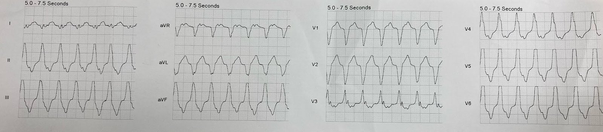
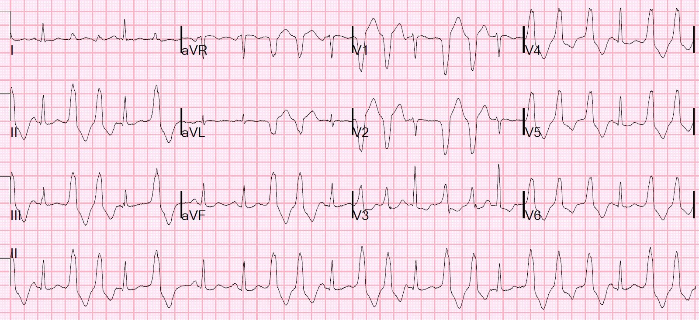
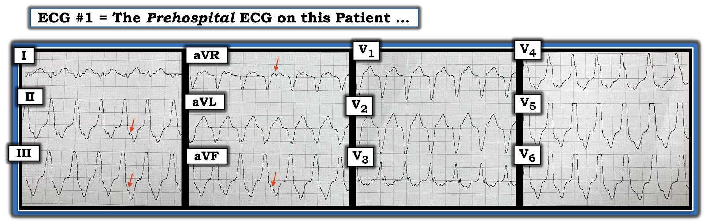

14/02/2022 — Một bệnh nhân 40 mấy tuổi không có tiền sử bệnh đến viện vì nhịp nhanh QRS rộng và đau ngực dữ dội kiểu bóp nghẹt
Bản dịch tiếng Việt của bài "A 40-something without past history presents with wide complex tachycardia and crushing chest pain" – Dr. Smith’s ECG Blog. Giữ nguyên toàn bộ 5 hình ảnh của bản gốc.
Xem phân tích điện tâm đồ quan trọng và chi tiết của Ken Grauer ở cuối bài.
Ca bệnh
Một bệnh nhân 40 mấy tuổi, không có tiền sử bệnh (PMH), đến viện vì hồi hộp đánh trống ngực, nhịp tim nhanh và đau ngực dữ dội kiểu bóp nghẹt.
Đây là điện tâm đồ trước viện.


Nhịp nhanh QRS rộng bền bỉ. Đây là VT hay SVT kèm dẫn truyền lệch hướng?
Ngoài ra: không có đoạn ST đồng hướng hay đoạn ST ngược hướng quá mức rõ ràng, nên khả năng có nhồi máu cơ tim do tắc (OMI) chồng lên là thấp.
Có nhịp nhanh QRS rộng đều, không có sóng P, với hình dạng LBBB và trục hướng xuống dưới.
[“Hình dạng“ LBBB khác với LBBB: nó có nghĩa là có sóng S chiếm ưu thế ở V1 và V2 và sóng R một pha ở V6.]
Hướng dẫn phân biệt VT với SVT kèm dẫn truyền lệch hướng: Tôi thích đơn giản hóa và gộp nhiều quy tắc dùng để phân biệt này thành 4 câu hỏi sau:
1. Có LBBB hay RBBB (chứ không chỉ là “hình dạng”) không?
—Nếu có thì nhiều khả năng là SVT
2. Trông có kỳ dị không? QRS đồng hướng làm cho nó trông kỳ dị, và đồng hướng là 1) KHÔNG CÓ bất kỳ phức bộ RS nào ở chuyển đạo trước tim (tức là đều một pha) và đặc biệt nếu 2) tất cả các QRS một pha đều cùng một hướng.
—Nếu có thì nhiều khả năng là VT
3. Điện thế ở phần khởi đầu của QRS thay đổi nhanh hay chậm? (mức thay đổi điện thế theo mức thay đổi thời gian)
—Nếu chậm thì là VT
—Nếu nhanh thì là SVT
4. Có trục “tây bắc” (northwest — hướng về aVR) không?
—Nhiều khả năng xuất phát từ phía Đông Nam (thất trái, & do đó nhiều khả năng là VT hơn)
Một vấn đề là các VT vô căn, như VT phân nhánh (fascicular VT) hay VT vào lại nhánh bó His, không tuân theo logic này.
Một dạng VT vô căn là VT đường ra thất phải (RVOT VT), và nó có hình dạng LBBB và trục hướng xuống dưới, vì nó xuất phát từ phần cao của thất phải, gần đường ra thất phải. VT do bệnh cơ tim/loạn sản thất phải gây loạn nhịp (ARVD) cũng có hình dạng LBBB, và có thể bị nhầm với RVOT cho đến khi làm thêm các thăm dò khác, bao gồm điện tâm đồ nền khi đang nhịp xoang. Xem 2 ca ARVD này, kèm giải thích.
VT phân nhánh thường gặp nhất là VT phân nhánh sau, và nó trông giống RBBB + LAFB. Xem bài này:
Idiopathic Ventricular Tachycardias for the EM Physician (Nhịp nhanh thất vô căn dành cho bác sĩ cấp cứu)
Ca bệnh tiếp diễn
Nhân viên cấp cứu ngoài viện không can thiệp gì. Bệnh nhân đến khoa cấp cứu và kể rằng cô đã bị hồi hộp đánh trống ngực từng cơn trong gần một năm. Các cơn thường kèm khó thở nhẹ, và có một cơn nặng kèm đau ngực kiểu đè ép sau xương ức. Các cơn thường tự hết trong vòng vài giây đến vài phút. Cô chưa từng đi khám vì vấn đề này.
Vào ngày nhập viện, cô bắt đầu hồi hộp đánh trống ngực khoảng 3 giờ trước đó và kéo dài liên tục từ đó. Cơn lần này kéo dài hơn và cảm thấy nặng hơn mọi cơn trước. Kèm theo có khó thở và đau ngực, được mô tả như cảm giác đè ép sâu. Cô cũng thừa nhận có buồn nôn và vã mồ hôi kèm theo.
Bệnh nhân trông có vẻ bệnh cấp tính, vã mồ hôi, thở nhanh và thể trạng chung kém. Tần số tim trong khoảng 120-130. Huyết áp tâm thu ban đầu ở mức 90 mấy.
Dải nhịp của cô (không trình bày ở đây) cho thấy các đợt nhịp nhanh QRS rộng xen kẽ với nhịp nhanh QRS hẹp.
Một điện tâm đồ được ghi tại khoa cấp cứu:


Có các loạt nhát dưới dạng cặp đôi và bộ ba. Đây là hình ảnh rất điển hình của RVOT, vốn còn được gọi là “VT đơn dạng lặp lại” (Repetitive Monomorphic VT).
Có các nhát xoang xen kẽ
Tôi đã đăng một ca RVOT vào tháng Mười Một năm 2021 và bàn luận kỹ về nó:
Toothache, incidental Wide Complex Tachycardia (Đau răng, tình cờ phát hiện nhịp nhanh QRS rộng)
Trích dẫn: “Do bệnh nhân có thể trạng chung kém, đau ngực dữ dội liên tục và huyết áp ở ngưỡng thấp, chúng tôi đã tiến hành sốc điện chuyển nhịp đồng bộ.”
Bạn nghĩ gì về lần thử sốc điện chuyển nhịp này?
Sốc điện chuyển nhịp trong ca này sẽ không cải thiện được tình hình! VT đã tự kết thúc rồi (xem các nhát xoang xen kẽ). Vấn đề không nằm ở việc cắt cơn, mà nằm ở sự khởi phát lặp đi lặp lại. Không có giải pháp tác dụng ngắn nào như adenosine hay sốc điện giải quyết được vấn đề này.
Tôi nhắc đến adenosine vì nó thường cắt được cơn RVOT VT!
Trong giai đoạn trước viện, VT là bền bỉ và lúc đó sốc điện chuyển nhịp hoặc adenosine đều đã có chỉ định. Bệnh nhân bị đau ngực dữ dội kiểu bóp nghẹt, vì vậy cần cắt cơn VT ngay lập tức.
Các kết quả xét nghiệm ban đầu trả về cho thấy lactat 3.7 và bicarbonat 18, kiềm hô hấp với PCO2 19, pH 7.56, kali 3.5 và calci ion hóa 3.98.
Bệnh nhân được cho 2 g magnesi theo kinh nghiệm, cùng với 40 mEq kali đường uống và 10 mEq kali tĩnh mạch.
Đúng như chúng ta dự đoán, sốc điện chuyển nhịp không có tác dụng.
Bác sĩ tim mạch trực chẩn đoán ngay RVOT VT và khuyến nghị dùng esmolol; thuốc đã được cho và tình trạng cải thiện rõ rệt.
Ghi chú của khoa tim mạch rất hữu ích ở đây: “Bệnh nhân nhập viện vì hồi hộp đánh trống ngực. Phát hiện các cơn VT không bền bỉ tái diễn kèm ngoại tâm thu thất (VPC) thường xuyên dưới nhiều dạng phối hợp, bao gồm cặp đôi, nhịp đôi, các cơn VT không bền bỉ dài từ 3 đến hơn 15 nhát với hình dạng blốc nhánh trái và trục hướng xuống dưới, không có bệnh tim cấu trúc nền, phù hợp nhất với RVOT VT vô căn. Dựa trên điện tâm đồ và siêu âm tim, không nghi ngờ ARVD. Siêu âm tim qua thành ngực (TTE) ngày 24/7: phân suất tống máu (EF) bảo tồn, vận động vách liên thất không đồng bộ và hở van hai lá nhẹ.”
Đã được truyền esmolol với tốc độ cao nhất tới 50. Triệu chứng và gánh nặng VT không bền bỉ được kiểm soát khá tốt với truyền esmolol và huyết áp ổn định. Tuy nhiên, bệnh nhân vẫn còn gánh nặng rối loạn nhịp đáng kể, làm tăng lo ngại đang tiến tới thể RVOT VT ác tính. Khoa tim mạch theo dõi sát.
Thật yên tâm khi thấy không có bất thường cấu trúc rõ ràng nào gợi ý ARVD, ít nhất là trên siêu âm tim. Đã bàn thêm về các lựa chọn xử trí: điều trị bảo tồn/điều trị nội khoa so với thăm dò điện sinh lý (EP) xâm lấn và thủ thuật triệt đốt. Thường thì các rối loạn nhịp này không đáp ứng tốt với thuốc chẹn beta và cuối cùng có thể cần đến thuốc chống loạn nhịp nhóm Ic; ưu và nhược điểm của lựa chọn đó cũng đã được thảo luận.
Sau đó bệnh nhân được bác sĩ điện sinh lý triệt đốt thành công. Troponin vẫn dưới bách phân vị thứ 99 cho đến sau thủ thuật triệt đốt.
Idiopathic Ventricular Tachycardias for the EM Physician (Nhịp nhanh thất vô căn dành cho bác sĩ cấp cứu)
VT ĐƠN DẠNG LẶP LẠI (trích từ UpToDate, một nguồn tài liệu tuyệt vời cho mọi bác sĩ)
VT ĐƠN DẠNG LẶP LẠI — VT đơn dạng lặp lại (repetitive monomorphic VT, RMVT) có đặc điểm là các “loạt” ngắn, thường xuyên của VT đơn dạng không bền bỉ (dạng sóng 1). Nó được Gallavardin mô tả lần đầu vào năm 1922 và được gọi bằng nhiều tên khác nhau trong y văn: RMVT, nhịp nhanh thất phải, nhịp nhanh đường ra thất phải (RVOT), VT nhạy cảm với catecholamine, VT nhạy cảm với adenosine, và VT do gắng sức. Khoảng 10 đến 15 phần trăm số ca xuất phát từ đường ra thất trái [26-28].
Mặc dù RMVT được coi là xảy ra trên tim “bình thường”, cộng hưởng từ tĩnh và cộng hưởng từ cine thường phát hiện những bất thường cấu trúc nhẹ của thất phải, chủ yếu liên quan đến thành tự do (mỏng khu trú, thâm nhiễm mỡ và rối loạn vận động thành) [13-15]. Ý nghĩa chức năng của những thay đổi này chưa chắc chắn. Trong số ít ca đã được nghiên cứu, DNA từ mẫu sinh thiết cơ tim thất đều bình thường [29].
Dịch tễ học và đặc điểm lâm sàng — RMVT hầu như chỉ xảy ra ở bệnh nhân trẻ đến trung niên không có bệnh tim cấu trúc [1,2,4-9]. Nhìn chung không có ưu thế theo giới tính, mặc dù một báo cáo ghi nhận nữ chiếm ưu thế với tỷ lệ 2:1 [26]. Một số lượng đáng ngạc nhiên vận động viên thi đấu (đặc biệt là vận động viên xe đạp) được ghi nhận trong nhiều loạt ca RMVT.
Các triệu chứng kèm theo thường gặp nhất là hồi hộp đánh trống ngực và choáng váng trong các cơn [5,6]. Trong một báo cáo minh họa gồm 18 bệnh nhân, mười hai người có rối loạn nhịp gây triệu chứng, trong đó hai người bị ngất, và sáu người hoàn toàn không có triệu chứng.
Phần lớn các rối loạn nhịp là không bền bỉ (thường 3 đến 15 nhát), nhưng có tới một nửa số bệnh nhân có một số cơn bền bỉ, và một số bệnh nhân chỉ có VT bền bỉ [6,9,13,30]. (Xem mục ‘VT bền bỉ kịch phát’ bên dưới.)
Các đợt VT không bền bỉ thường bị khởi phát bởi căng thẳng cảm xúc hoặc gắng sức, thường xảy ra trong giai đoạn “hạ nhiệt” (warm-down) sau gắng sức, là thời điểm catecholamine tuần hoàn đạt mức đỉnh [5,6,8]. Cũng có thể có quy luật theo nhịp ngày đêm, với các đỉnh rõ rệt trong khoảng từ 7 đến 11 giờ sáng và từ 4 đến 8 giờ chiều, tương ứng với các giai đoạn hoạt động giao cảm tăng [31]. Ở một số bệnh nhân, có thể xác định được một “cửa sổ” tần số tim then chốt (ngưỡng trên và ngưỡng dưới) làm xuất hiện rối loạn nhịp [27].
Việc có thể gây ra RMVT bằng stress hoặc truyền catecholamine gợi ý một bất thường trong chức năng giao cảm của tim. Phù hợp với giả thuyết này là bằng chứng về sự mất phân bố thần kinh giao cảm khu vực ở tim ở một số bệnh nhân RMVT có tim bình thường về cấu trúc (năm trên chín bệnh nhân so với không trên chín người ở nhóm chứng trong một báo cáo) [32]. Bệnh nhân RMVT cũng có thể có những vùng suy giảm tái hấp thu norepinephrine vào neuron, dẫn đến tăng nồng độ catecholamine tại synap cục bộ và điều hòa giảm các thụ thể beta adrenergic của cơ tim [33].
Cũng có thể có các yếu tố khởi phát đặc thù theo giới tính. Trong một báo cáo gồm 47 nam và nữ bị RMVT, các trạng thái dao động nội tiết tố (tiền kinh nguyệt, thai kỳ, quanh mãn kinh, dùng thuốc tránh thai) là yếu tố khởi phát RMVT thường gặp nhất ở 59 phần trăm phụ nữ và là yếu tố khởi phát duy nhất nhận biết được ở 41 phần trăm [34]. Nam giới có nhiều khả năng hơn nữ giới xác định gắng sức, stress hoặc caffeine là yếu tố khởi phát (92 so với 41 phần trăm).
Vị trí khởi phát — Nhịp nhanh thất phải thường xuất phát từ phía vách của RVOT [6,26,28,35-38]. Một sơ đồ lập bản đồ chín vị trí ở phần vách của RVOT đã cho thấy hữu ích trong việc định vị nhịp nhanh RVOT dựa trên hình dạng điện tâm đồ 12 chuyển đạo (hình 1) [39].
Nhịp nhanh thất phải điển hình xuất phát từ một vùng rất hẹp ngay dưới van động mạch phổi ở mặt trước của RVOT [37]. Lập bản đồ nội mạc ở những bệnh nhân này cho thấy vị trí hoạt hóa nội mạc sớm nhất nằm ở vùng này [6,9].
Ít gặp hơn, vị trí khởi phát đã được lập bản đồ ở đường vào thất phải, thành tự do của RVOT, gốc động mạch phổi, xoang Valsalva trái và phải của động mạch chủ, thất trái, vòng van hai lá và các cơ nhú [26,36,38,40-49].
Đặc điểm điện tâm đồ — Tần số điển hình của RMVT dao động từ 140 đến 180 nhịp/phút, và có thể thay đổi theo nồng độ catecholamine. Độ dài chu kỳ VT thường kéo dài ra trước khi cơn kết thúc.
Đường ra thất phải — Phần lớn các cơn RMVT có hình ảnh điện tâm đồ đặc trưng với hai đặc điểm chính [1,2,4-9,39]:
●Blốc nhánh trái
●Trục hướng xuống dưới
Hình dạng này phù hợp với nguồn gốc RVOT thấy được qua triệt đốt qua ống thông và lập bản đồ nội mạc [6,37]. “Dấu ấn” điện tâm đồ này chiếm ít nhất 70 phần trăm tổng số VT vô căn [1].
Hình ảnh điện tâm đồ lúc khởi phát nhịp nhanh thất phải có thể cung cấp thông tin về vị trí khởi phát và cơ chế gây loạn nhịp, như minh họa qua các nhận xét sau:
●Trong một loạt 32 bệnh nhân bị RMVT do gắng sức, VT thường bắt đầu mà không có thay đổi độ dài chu kỳ. Các rối loạn nhịp khởi phát theo cách này có trục hướng xuống dưới, và có vẻ liên quan đến hoạt động khởi kích do hậu điện thế muộn [50]. Ngược lại, VT khởi phát bằng chuỗi dài-ngắn thường là không bền bỉ hơn và hay có trục hướng lên trên, gợi ý nguồn gốc ở thân hoặc vùng vách của tâm thất; cơ chế của VT này có lẽ là hậu điện thế sớm.
●Trong một báo cáo gồm 14 bệnh nhân, những người có vị trí ở vách so với ở thành tự do ít có khía ở phức bộ QRS hơn một cách có ý nghĩa (29 so với 95 phần trăm) và nhiều khả năng có vùng chuyển tiếp ở chuyển đạo trước tim sớm, trước hoặc tại chuyển đạo V4 hơn (79 so với 5 phần trăm) [51]. Ngoài ra, sóng R dương ở chuyển đạo I giúp phân biệt vị trí phía sau với vị trí vách phía trước và thành tự do.
●Mức độ tương đồng của dạng sóng điện tâm đồ 12 chuyển đạo giữa VT và bản đồ tạo nhịp (pace map) có thể được dùng để ước tính khả năng triệt đốt thành công tại vị trí đó. (Xem mục ‘Triệt đốt bằng sóng có tần số radio’ bên dưới.)
Điều trị nội khoa — Điều trị nội khoa có hai vai trò trong RMVT: cắt cơn rối loạn nhịp; và phòng ngừa tái phát. RMVT có thể được cắt cơn bằng adenosine và thuốc chẹn beta, tất cả đều can thiệp vào dòng calci chậm đi vào qua trung gian cAMP [29,40,56-58].
Để phòng ngừa tái phát, thuốc chẹn beta thường được dùng làm thuốc đầu tay. Các thuốc này hấp dẫn vì hồ sơ tác dụng phụ của chúng nhẹ so với các thuốc chống loạn nhịp [64].
Propranolol đã ngăn được tái phát ở tới 14 trên 22 bệnh nhân RMVT có nguồn gốc điển hình từ RVOT [6,65]. Tuy nhiên, các nghiên cứu khác lại thấy những thuốc này ít có khả năng ngăn RMVT tái phát hơn nhiều, dù phối hợp một thuốc chẹn beta với một thuốc nhóm I có thể hữu ích [9,55].
Riêng các thuốc chống loạn nhịp nhóm I (bảng 2) có ích ở một số bệnh nhân. Tuy nhiên, các thuốc nhóm III (sotalol và amiodarone) có thể được ưu tiên hơn, nhất là ở bệnh nhân có rối loạn nhịp kháng trị với các thuốc khác [9].
Triệt đốt bằng sóng có tần số radio — Do hiệu quả hạn chế và các tác dụng phụ tiềm tàng của thuốc chống loạn nhịp, triệt đốt bằng sóng có tần số radio (RF) ngày càng được dùng nhiều ở bệnh nhân RMVT có triệu chứng. Các hướng dẫn của hội chuyên ngành về xử trí rối loạn nhịp thất và dự phòng đột tử do tim (SCD) cho biết có bằng chứng và/hoặc sự đồng thuận chung ủng hộ triệt đốt RF ở bệnh nhân VT vô căn có triệu chứng kháng trị với thuốc, hoặc ở những bệnh nhân như vậy mà không dung nạp thuốc hay không muốn điều trị thuốc lâu dài [64].

===================================
BÌNH LUẬN CỦA TÔI, bởi KEN GRAUER, MD (14/2/2022):
===================================
Một ca xuất sắc để minh họa cách tiếp cận một người lớn “trẻ đến trung niên” trước đó khỏe mạnh, đến viện trong một nhịp WCT ( = nhịp nhanh QRS rộng – Wide-Complex Tachycardia) đều bền bỉ. Cho rõ ràng — tôi đã đưa lại bản ghi đầu tiên của ca hôm nay để làm nổi bật thêm một số điểm trong phần trình bày ở trên của Dr. Smith (Hình 1).


Nhịp trong Hình 1 — là một WCT đều tần số ~150/phút, không có dấu hiệu rõ ràng của sóng P xoang. Câu hỏi thứ 1 được đặt ra — là xác định căn nguyên của nhịp này. Dù không thể chắc chắn chỉ từ điện tâm đồ đầu tiên này — có một số manh mối giúp tiên đoán với độ chính xác cao rằng nhịp này là RVOT VT (nhịp nhanh thất đường ra thất phải – Right Ventricular Outflow Track Ventricular Tachycardia):
- Người ta có xu hướng gọi các nhịp WCT đều giống với các rối loạn dẫn truyền đã biết là nhịp SVT “dẫn truyền lệch hướng” — nhất là khi bệnh nhân là người lớn còn trẻ, không có tiền sử bệnh tim đã biết. Đây là một sai lầm. Tỷ lệ chung của VT vô căn (tức là VT ở bệnh nhân không có bệnh tim cấu trúc nền) — là ~10% trong dân số chung. Dù vậy — tỷ lệ này tăng lên ở những bệnh nhân như người phụ nữ 46 tuổi vốn khỏe mạnh trong ca hôm nay — đến mức khả năng thống kê để nhịp WCT đều trong Hình 1 là VT (ngay cả trước khi đánh giá các đặc điểm hình dạng cụ thể trên điện tâm đồ) — có lẽ là ~20% (tức là đủ cao để chủ động cân nhắc VT trong chẩn đoán phân biệt).
- LƯU Ý #1: Có thể có hoạt động nhĩ ngược dòng (tức là các mũi tên ĐỎ ở các chuyển đạo thành dưới và ở chuyển đạo aVR có thể biểu thị dẫn truyền VA 1:1). Dù vậy — dẫn truyền ngược dòng 1:1 không giúp phân biệt VT với các nhịp SVT vào lại, vì cả hai đều có thể dẫn truyền ngược dòng với tỷ lệ 1:1.
- LƯU Ý #2: Để tham khảo — tôi đã tóm tắt các điểm MẤU CHỐT về các VT vô căn trong Hình 2. Trong các VT vô căn — RVOT VT là dạng thường gặp nhất, bỏ xa các dạng khác. Hình dạng điện tâm đồ của RVOT VT được mô tả là giống hình ảnh LBBB ở các chuyển đạo ngực — và — trục hướng xuống dưới ở các chuyển đạo chi (tức là phức bộ QRS dương nhiều hơn hẳn ở các chuyển đạo thành dưới so với chuyển đạo I).
- Dẫn truyền lệch hướng thường biểu hiện hình dạng QRS phù hợp với blốc ở một hoặc nhiều phân nhánh dẫn truyền, nhất là ở bệnh nhân không có bệnh tim nền. Nghĩa là — hình dạng QRS do dẫn truyền lệch hướng ở người 46 tuổi trước đó khỏe mạnh này lẽ ra phải giống một dạng “điển hình“ của RBBB, LBBB, LAHB, LPHB hoặc RBBB kèm một trong các blốc phân nhánh.
- Hình dạng QRS trong Hình 1 không phù hợp với một “dạng điển hình” của hình ảnh LBBB. Dù QRS âm là chủ yếu ở các chuyển đạo V1,V2 — và sóng R đơn pha ở các chuyển đạo V5,V6 là điển hình cho dẫn truyền LBBB — vùng chuyển tiếp sớm (tức là sóng R đã dương hoàn toàn ngay từ chuyển đạo V3) không phù hợp với một hình ảnh LBBB có sẵn từ trước “điển hình”, vì rối loạn dẫn truyền này hầu như luôn giữ QRS âm là chủ yếu ít nhất cho tới chuyển đạo V5.
- Dẫn truyền lệch hướng kiểu LBBB liên quan tần số ở một người lớn còn trẻ trước đó khỏe mạnh cũng thường biểu hiện hình dạng LBBB “điển hình” hơn. Ngược lại — VT đường ra thất trái hoặc thất phải (tức là LVOT VT hoặc RVOT VT) — thường biểu hiện hình dạng LBBB hơi không điển hình (thường có vùng chuyển tiếp sớm hơn ở các chuyển đạo ngực).
- Các chuyển đạo chi trong Hình 1 cũng không “điển hình” cho hình dạng dẫn truyền LBBB có thể gặp với LBBB có sẵn từ trước hoặc dẫn truyền lệch hướng. Thay vào đó — lẽ ra QRS phải dương là chủ yếu (thường là sóng R dương đơn pha) ở các chuyển đạo I và aVL khi có hình ảnh LBBB do dẫn truyền trên thất. Việc thấy một vectơ QRS gần bằng không rất nhỏ ở chuyển đạo I, và QRS âm hoàn toàn ở chuyển đạo aVL (như thấy trong Hình 1) — gợi ý mạnh rằng nhịp này không phải là nhịp trên thất.
ĐIỀU CỐT LÕI: Chúng ta nên ngay lập tức nghi ngờ rằng biểu hiện lâm sàng của nhịp WCT đều không có sóng P xoang này, ở người phụ nữ 46 tuổi trước đó khỏe mạnh này — với các đặc điểm “không điển hình” cho dẫn truyền LBBB — không phải là SVT kèm dẫn truyền lệch hướng kiểu LBBB. Thay vào đó — biểu hiện lâm sàng và hình dạng điện tâm đồ thấy trong Hình 1 là hoàn toàn điển hình cho biểu hiện của RVOT VT cho tới khi bạn chứng minh được điều ngược lại.

Đọc THÊM về VT vô căn:
- BẤM VÀO ĐÂY — để nghe bài Audio dài 8 phút của tôi về các điểm then chốt (Pearls) để nhận diện VT vô căn trên điện tâm đồ (đặc biệt chú ý tới RVOT VT và VT phân nhánh (fascicular VT) — là 2 dạng thường gặp nhất).